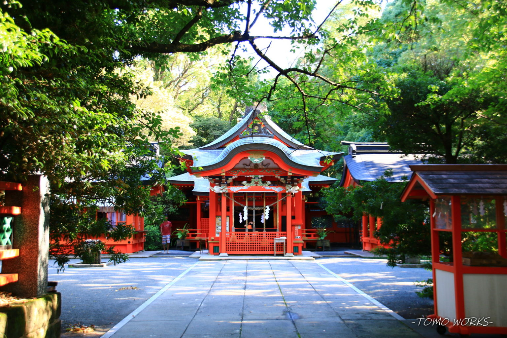

枚聞神社（Hirakiki-jinja）

住所
〒891-0603
鹿児島県指宿市開聞十町1366
旧国名
薩摩国一宮
御祭神
大日孁貴命（おおひるめむちのかみ）
枚聞神社について
枚聞神社は、薩摩半島の東南端に突出している標高924mの美しい姿の開聞岳（かいもんだけ）の麓に鎮座します。創始の年代は社伝でも不明ですが、
ヒラキキ岳と呼ばれた開聞岳を御神体とする古い歴史を持つ神社と考えられています。
『日本三代実録』の貞観2年（860）3月の条に記されていることから、少なくとも1200年以上の歴史があります。
戦国時代は島津氏の有力家臣であった頴娃氏（えいし）の庇護下にありましたが、戦火で社伝が焼失しました。
しかし、すぐに島津氏の庇護を受けて再興しています。
祭神は大日孁貴命（おおひるめむちのかみ）を主祭神に五男三女神を配祀（はいし）し、航海神としても崇められています。
お祭り
『ほぜ祭り』・・10月14日から16日に行われる祭礼です。極彩色に彩られた本殿を持つ枚聞神社で開催されます。14日に古伝神舞が奉納され
る他、16日には神輿渡御が行われ、騎馬武者を先頭に、猿田彦や稚児などが町中を練り歩き、午後にはほぜ相撲大会などが行われます。